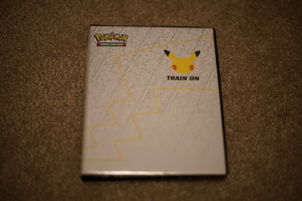
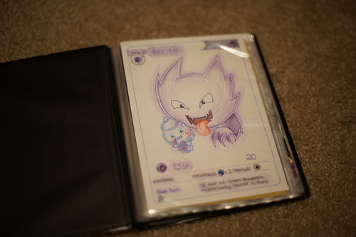

june 12 2021 marks the day i cracked open my first lucky egg!!! i'm so happy!!! i was just slightly disappointed that the double yolk isn't actually 2 full sized yolks though! i wasn't sure i'd ever find one tbh but i started running around screaming when i opened it and dragged ryan in to look at it and also took a bunch of photos of it! my mom said she hasn't even gotten one yet!
ryan bought one of those pokemon 25 card binders and then opened the package to find that the binder is only for large cards. and then he tried to put his older big cards in and they were too big!! we only had one card that fit and it was my longcat meowth ;_;
i drew him a haunter for it though! and then bought him the unova starter big card set... they were for his birthday but he needed to open them early
i used my brand new prismacolor set on the card! they are so smooth its insane
i've been reading kuragehime and im on omnibus book 8 now. this series is so good and i'm loving every page. i'm 100% rooting for kuranosuke! i love that boy. i cant recommend this printing though because about 4 of the books came with rips in the covers. one of them looks like it had a run in with a box cutter.
i watched the nintendo direct this morning and my wishlist hasnt changed at all after it. im still excited for great ace attorney chronicles! i've got silvercase 2425, ni no kuni 2, catherine full body and no more heroes 3 on my wishlist as well but i'll wait for good sales for all of those. ive already played catherine so if i miss that i'll be okay. i heard ni no kuni 2 wasnt very good but id try it for cheap.
i bought nier replicant a bit ago and im like 20 hours in. im so glad im not playing the stupid papa nier gestalt dub although im really curious about the changes they did for it. i'm not willing to spend more than thrift store prices tho.
i really really wish nier replicant was available before nier automata. i might need to replay automata again after this... i am not going to delete my save this time. that was a mistake!!! (and all my fault)